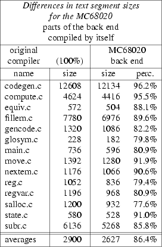
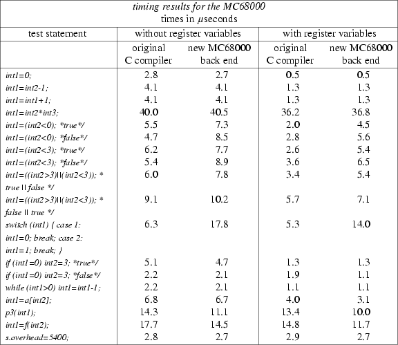

ABSTRACT
Frank Doodeman
A back end table is part of the Amsterdam Compiler Kit (ACK). It is used to produce the actual back end, a program that translates the intermediate language family EM to assembly language for some target machine. The table discussed here can be used for two back ends, suitable for in total three machines: the MC68000 and MC68010 (the difference between these two is so small that one back end table can be used for either one), or for the MC68020.
To simplify the task of producing portable (cross) compilers and interpreters the Vrije Universiteit designed an integrated collection of programs, the Amsterdam Compiler Kit (ACK) [2]. It is based on the old UNCOL idea [1] which attempts to solve the problem of how to make a compiler for each of N languages on M different machines without having to write N×M programs.
The UNCOL approach is to write N front ends, which translate the source language into a common intermediate language UNCOL (Universal Computer Oriented Language), and M back ends, each of which translates programs in UNCOL into a specific machine language. Under these conditions only M+N programs must be written to provide all N languages on all M machines, instead of M×N programs.
The intermediate language for the Amsterdam Compiler Kit is the machine language for a simple stack machine called EM (Encoding Machine) [3]. So a back end for the MC68020 translates EM code into MC68020 assembly language. Writing such a table [4] suffices to get the back end.
The back end is a single program that is driven by a machine dependent driving table. This table, the back end table, defines the mapping of EM code to the MC68000, MC68010 or MC68020 assembly language.
In this document the name MC68000 will be used for both the MC68000 and the MC68010 micro processors, because as far as the back end table is concerned there is no difference between them. For a complete and detailed description of the MC68020 one is referred to [5]; for the MC68000 one might also use [6]. In this section some relevant parts will be handled.
Both the MC68000 and the MC68020 have eight 32-bit data registers (D 0 -D 7 ) that can be used for byte (8-bit), word (16-bit) and long word (32-bit) data operations. They also have seven 32-bit address registers (A 0 -A 6 ) that may be used as software stack pointers and base address registers; address register A 7 is used as the system stack pointer. Address registers may also be used for word and long word address operations.
First the MC68000 addressing modes will be discussed. Since the MC68020’s set of addressing modes is an extension of the MC68000’s set, of course this section also applies to the MC68020.
In the description we use:
|
A n |
for address register; |
|
D n |
for data register; |
|
R n |
for address or data register; |
|
X n |
for index register (either data or address register); |
|
PC |
for program counter; |
|
d 8 |
for 8 bit displacement integer; |
|
d 16 |
for 16 bit displacement integer; |
|
bd |
for base displacement (may be null, word or long); |
|
od |
for outer displacement (may be null, word or long). |
|
Syntax: |
R n |
This addressing mode (it can be used with either a data register or an address register) specifies that the operand is in one of the 16 multifunction registers.
|
Syntax: |
(A n ) |
The address of the operand is in the address register specified.
|
Syntax: |
(A n )+ |
The address of the operand is in the address register specified. After the operand address is used, the address register is incremented by one, two or four depending upon whether the size of the operand is byte, word or long. If the address register is the stack pointer and the operand size is byte, the address register is incremented by two rather than one to keep the stack pointer on a word boundary.
|
Syntax: |
−(A n ) |
The address of the operand is in the address register specified. Before the operand address is used, the address register is decremented by one, two or four depending upon whether the size of the operand is byte, word or long. If the address register is the stack pointer and the operand size is byte, the address register is decremented by two rather than one to keep the stack pointer on a word boundary.
|
Syntax: |
d 16 (A n ) for the MC68000, (d 16 ,A n ) for the MC68020 |
This address mode requires one word of extension. The address of the operand is the sum of the contents of the address register and the sign extended 16-bit integer in the extension word.
|
Syntax: |
d 8 (A n ,X n .size) for the MC68000, (d 8 ,A n ,X n .size) for the MC68020 |
This address mode requires one word of extension according to a certain format, which specifies
|
1. |
which register to use as index register; |
|
2. |
a flag that indicates whether the index register is a data register or an address register; |
|
3. |
a flag that indicates the index size; this is word when the low order part of the index register is to be used, and long when the whole long value in the register is to be used as index; |
|
4. |
an 8-bit displacement integer (the low order byte of the extension word). |
The address of the operand is the sum of the contents of the address register, the possibly sign extended contents of index register and the sign extended 8-bit displacement.
|
Syntax: |
address for the MC68000, (address) for the MC68020 |
Two different kinds of this mode are available:
|
1. |
Absolute Short Address; this mode requires one word of extension. The address of the operand is the sign extended 16-bit extension word. |
|
2. |
Absolute Long Address; this mode requires two words of extension. The address of the operand is developed by concatenation of the two extension words; the high order part of the address is the first extension word, the low order part is the second. |
|
Syntax: |
d 16 (PC) for the MC68000, (d 16 ,PC) for the MC68020 |
This mode requires one word of extension. The address of the operand is the sum of the address in the program counter and the sign extended 16-bit displacement integer in the extension word. The value in the program counter is the address of the extension word.
|
Syntax: |
d 8 (PC,X n .size) for the MC68000, (d 8 ,PC,X n .size) for the MC68020 |
This mode requires one word of extension as described under Address Register Indirect With Index. The address of the operand is the sum of the value in the program counter, the possibly sign extended index register and the sign extended 8-bit displacement integer in the extension word. The value in the program counter is the address of the extension word.
|
Syntax: |
.if !r0x .nr 0x 0 |
This addressing mode requires either one or two words of extension, depending on the size of the operation;
|
byte operation - the operand is in the low order byte of extension word; word operation - the operand is in the extension word; long operation - the operand is in the two extension words, the high order 16-bits are in the first extension word, the low order 16-bits in the second. |
The MC68020 has three more addressing modes. These modes all use a displacement (some even two), an address register and an index register. Instead of the address register one may also use the program counter. Any of these may be omitted. If all addends are omitted the processor creates an effective address of zero. All of these three modes require at least one extension word, the Full Format Extension Word, which specifies:
|
1. |
the index register number (0-7); |
|
2. |
the index register type (address or data register); |
|
3. |
the size of the index (only low order part or the whole register) |
|
4. |
a scale factor. This is a number from 0 to 3 which specifies how many bits the contents of the index register is to be shifted to the left before being used as an index; |
|
5. |
a flag that specifies whether the base (address) register is to be added or to be suppressed; |
|
6. |
a flag that specifies whether to add or suppress the index operand; |
|
7. |
two bits that specify the size of the base displacement (null, word or long); |
|
8. |
three bits that in combination with (6) above specify which of the three addressing modes (described below) to use and, if used, the size of the outer displacement (null, word or long). |
|
N.B. |
All modes mentioned above for the MC68000 that use an index register may have this register scaled (only when using the MC68020). |
The three extra addressing modes are:
|
Syntax: |
(bd,A n ,X n .size*scale) (MC68020 only) |
The address of the operand is the sum of the contents of the address register, the scaled contents of the possibly scaled index register and the possibly sign extended base displacement. When the program counter is used instead of the address register, the value in the program counter is the address of the full format extension word. This mode requires one or two more extension words when the size of the base displacement is word or long respectively.
Note that without the index operand, this mode is an extension of the Address Register Indirect With Displacement mode; when using the MC68020 one is no longer limited to a 16-bit displacement. Also note that with the index operand added, this mode is an extension of the Address Register Indirect With Index mode; when using the MC68020 one is no longer limited to an 8-bit displacement.
|
Syntax: |
([bd,A n ],X n .size*scale,od) (MC68020 only) |
This mode may use an outer displacement. First an intermediate memory address is calculated by adding the contents of the address register and the possibly sign extended base displacement. This address is used for in indirect memory access of a long word, followed by adding the index operand (scaled and possibly signed extended). Finally the outer displacement is added to yield the address of the operand. When the program counter is used, the value in the program counter is the address of the full format extension word.
|
Syntax: |
([bd,A n ,X n .size*scale],od) (MC68020 only) |
This mode may use an outer displacement. First an intermediate memory address is calculated by adding the contents of the address register, the scaled contents of the possibly sign extended index register and the possibly sign extended base displacement. This address is used for an indirect memory access of a long word, followed by adding the outer displacement to yield the address of the operand. When the program counter is used, the value in the program counter is the address of the full format extension word.
Not all addressing modes mentioned above are used in code generation. It is clear that none of the modes that use the program counter PC can be used, since at code generation time nothing is known about the value in PC. Also some of the possibilities of the three MC68020 addressing modes are not used; e.g. it is possible to use a Data Register Indirect mode, which actually is the Address Register Indirect With Index mode, with the address register and the displacement left out. However such a mode would require two extra bytes for the full format extension word, and it would also be much slower than using Address Register Indirect. For this kind of reasons several possible addressing modes are not used in the generation of code. In the table address registers are only used for holding addresses, and for index registers only data registers are used.
The table itself has to be run through the C preprocessor before it can be used to generate the back end (called code generator or cg for short). When no flags are given to the preprocessor an MC68020 code generator is produced; for the MC68000 code generator one has to run the table through the preprocessor using the -Dm68k4 flag.
The table is designed as described in [4]. For the overall design of a back end table one is referred to this document. This section only deals with problems encountered in writing the table and other things worth noting.
Wordsize and pointersize (EM_WSIZE and EM_PSIZE respectively) are defined as four (bytes). EM_BSIZE, the hole between AB (the parameter base) and LB (the local base), is eight bytes: only the return address and the localbase are saved.
Since Hans van Staveren in his document [4] clearly states that cg execution time is negatively influenced by the number of properties, only four different properties have been defined. Besides, since the registers really are multifunctional, these four are really all that are needed.
The table uses register variables: D 3 - D 7 are used as general register variables, and address registers A 2 - A 5 are used as pointer register variables. A 6 is reserved for the localbase.
At first glance one might wonder about the amount of tokens, especially for the MC68020, considering the small amount of different addressing modes. However, the last three addressing modes mentioned for the MC68020 may omit any of the addends, and this leads to a large amount of different tokens. I did consider the possibility of enlarging the number of tokens and sets even further, because there might be assemblers that don’t handle displacements of zero optimally (they might generate a 2 byte extension word holding zero). The small profit in bytes in the generated code however does not justify the increase in size of the token section, the set section and the patterns section, so this idea was not developed any further.
The timing cost of the tokens may be incorrect for some MC68000 tokens. This is because the MC68000 uses a 16-bit data bus which causes the need of two separate memory accesses for getting 32-bit operands.
The amount of tokens and the limited capability of the authors imagination might have caused the names of some tokens not to be very clarifying. Some information about the names may be in place here.
Whenever part of a token name is in capitals that part is memory indirected (i.e. in square brackets). In token names OFF and off mean an offsetted address register, so an address register with a displacement (either base displacement or outer displacement). IND, ind and index stand for indexed, or index register. ABS and abs stand for absolute, which actually is just a displacement (base or outer). These ‘rules’ only apply to names of tokens that represent actual operands. There are also tokens that represent addresses of operands. These (with a few exceptions) contain regA, regX and con as parts of there names, which stand for address register, index register and displacement (always base displacement) respectively. If the address to which the token refers uses memory indirection, that part of the name comes first (in small letters), followed by an underscore. The memory indirection part follows the ‘rules’ for operand token names.
Of course there are exceptions to these ‘rules’ but in those cases the names are self explanatory.
Two special cases: ext_regX is the name of the token that represents the address of an absolute indexed operand, syntax (bd,X n .size*scale); regX does not represent any real mode, but is used with EM array instructions and pointer arithmetic.
The MC68000 requires two extra tokens, which are called t_regAcon and t_regAregXcon. They are necessary because regAcon can only have a 16-bit displacement on the MC68000, and regAregXcon uses only 8 bits for its displacement. To prevent these addressing modes to be used with displacements that are too large, the extra tokens are needed. Whenever the displacements become too large and they need to be used in the generation of assembly code, these tokens are transformed into other tokens. To prevent the table from becoming too messy I defined t_regAcon and t_regAregXcon to be identical to regAcon and regAregXcon respectively for the MC68020.
Most set names used in the table are self explanatory, especially to the reader who is familiar with the four addressing categories as mentioned in [5]: data, memory, alterable and control. In the sets definition part some sets are defined that are not used elsewhere in the table, but are only used to be part of the definition of some other set. This keeps the set definition part from getting too unreadable.
The sets called imm_cmp consist of all tokens that can be used to compare with a constant.
Only the instructions that are used in code generation are listed here. The first few instructions are meant especially for the use with register variables. The operand LOCAL used here refers to a register variable. The reader may not conclude that these operations are also allowed on ordinary locals. The space and timing cost of these instructions have been adapted, but the use of the word LOCAL for register variables causes these cost to be inaccurate anyway.
The killreg instruction, which generates a comment in the assembly language output and which is meant to let cg know that the data register operand has its contents destroyed, needs some explaining but this explanation is better in place in the discussion of groups 3 and 4 of the section about patterns.
The timing cost of the instructions are probably not very accurate for the MC68020 because the MC68020 uses an instruction cache and prefetch. The cost used in the table are the ‘worst case cost’ as mentioned in section 9 of [5].
These are all pretty straightforward, except perhaps when t_regAcon and t_regAregXcon are used. In these cases the size of the displacement has to be checked before moving. This also applies to the stacking rules and the coercions.
These three tests (one fore each operation size) could not be more straightforward than they are now.
The only peculiar stackingrule is the one for regX. This token is only used with EM array instructions and with pointer arithmetic. Whenever it is put on the fake stack, some EM instructions are left in the instruction stream to remove this token. Consequently it should never have to be stacked. However the code generator generator (or cgg for short) complained about not having a stackingrule for this token, so it had to be added nevertheless.
These are all straightforward. There are no splitting coercions since the fake stack never contains any tokens that can be split. There are only two unstacking coercions. The rest are all transforming coercions. Almost all coercions transform tokens into either a data register or an address register, except in the MC68000 part of the table the t_regAcon and t_regAregXcon tokens are transformed into real regAcon and regAregXcon tokens with displacements that are properly sized.
This is the largest part of the table. It is subdivided into 17 groups. We will take a closer look at the more interesting groups.
This group makes sure that EM instructions using register variables are handled efficiently. This group includes: local loads and stores; arithmetic, shifts and logical operations on locals and indirect locals and pointer handling, where C expressions like *cp++ are handled. For such an expression there are several EM instruction sequences the front end might generate. For an integer pointer e.g.:
lol lol adp stl loi $1==$2 && $1==$4 && $3==4 && $5==4
or
lol loi lol adp stl $1==$3 && $3==$5 && $2==4 && $5==4
or perhaps even
lil lol adp stl $1==$2 && $2==$4 && $3==4
Each of these is included, since which one is generated is is up to the front end. If the front end is consistent this will mean that some of these patterns will never be used in code generation. This might seem a waist, but anyone who thinks that will certainly change his mind when his new C front end generates a different EM instruction sequence.
In these groups lof and stf , loi and sti , ldf and sdf are the important instructions. These are the large parts in this group, especially the loi and sti instructions, because they come in three basic sizes (byte, word and long). Note that with these instructions in the MC68000 part the exact is omitted in front of regAcon and regAregXcon. This makes sure that t_regAcon and t_regAregXcon are transformed into proper tokens before they are used as addresses.
Also note that the regAregXcon token is completely left out from the lof, stf, ldf and sdf instruction handling. This is because the sum of the token displacement and the offset provided in the instruction cannot be checked and is likely to exceed 8 bits. Unfortunately cgg does not allow the inspection of subregisters of tokens that are on the fake stack. This same problem might also occur with the regAcon token, but this is less likely because it uses 16-bit displacements. Besides if it would have been left out the lof, stf, ldf and sdf instructions would have been handled considerably less efficient.
EM instruction sbi also works with address registers, because the cmp instruction in group 12 is replaced by sbi 4.
For the MC68000 mli, mlu, dvi, dvu, rmi and rmu are handled by library routines. This is because the MC68000 has only 16-bit multiplications and divisions.
The MC68020 does have 32-bit multiplications and divisions, but for the rmi and rmu EM instructions peculiar things happen anyway: they generate the killreg instruction. This is necessary because the data register that first held the dividend now holds the quotient; the original contents are destroyed without cg knowing about it (the destruction of the two registers that make up the DREG_pair token couldn’t be noted in the instructions part of the table). To let cg know that these contents are destroyed, we have to use this ‘pseudo instruction’ from lack of a better solution.
Since floating point arithmetic is not implemented traps will be generated here.
This also is a very important group, along with groups 1 and 2. The MC68020 has many different addressing modes and if possible they should be used in the generation of assembly language.
The regX token is generated here too. It is meant to make efficient use of the MC68020 possibility of scaling index registers.
Note that I would have liked one extra pattern to handle C-statements like
pointer += expr ? constant1 : constant2;
efficiently. This pattern would have looked like:
pat ads
with const
leaving adp %1.num
but when cg is coming to the EM replacement part, the constant has already been removed from the fake stack, causing %1.num to have a wrong value.
The EM instructions and, ior and xor are so much alike that procedures can be used here, except for the xor $1==4 instruction, because the MC68000 eor instruction does not allow as many kinds of operands as and and or.
This group also tries to make efficient use of the available addressing modes, but it leaves the actual work to group 6 mentioned above.
The regX token is also generated here. In this group this token is very useful for handling array instructions for arrays with one, two, four or eight byte elements; the array index goes into the index register, which can then be scaled appropriately. An offset is used when the first array element has an index other than zero.
I would have liked some extra patterns here too but they won’t work for the same reasons as explained in the discussion of group 6.
The function return area consists of registers D 0 and D 1 .
In many cases here library routines are called. These will be discussed later.
Two special EM instructions are included here: dch, and lpb. I don’t know when they are generated by a front end, but these instructions were also in the back end table for the PDP. In the PDP table these instructions were replaced by loi 4 and adp 8 respectively. I included them both, since they couldn’t do any harm.
This group is handling EM patterns with more than one instruction. This group is not absolutely necessary but it makes the generation of code more efficient. Among the things that are handled here are: arithmetic and logical operations on locals, externals and indirect locals; shifting of locals, externals and indirect locals by one; some pointer arithmetic; tests in combination with logical and’s and or’s or with branches. Finally there are sixteen patterns about divisions that could be handled more efficiently by right shifts and which I think should be handled by the peephole optimizer (since it also handles the same patterns with multiplication).
The table is supplied with two separate libraries: one for the MC68000 and one for the MC68020. The MC68000 uses a couple more routines than the MC68020 because it doesn’t have 32-bit division and multiplication.
The routines that need to pop their operands first store their return address. Routines that need other register besides D 0 -D 2 and A 0 -A 1 first store the original contents of those registers. D 0 -D 2 and A 0 -A 1 do not have to be saved because if they contain anything useful, their contents are pushed on the stack before the routine is called.
The .trp routine just prints a message stating the trap number and exits (except of course when that particular trap number is masked). Usually higher level languages use their own trap handling routines.
The .mon routine doesn’t do anything useful at all. It just prints a message stating that the specified system call is not implemented and then exits. Front ends usually generate calls to special routines rather than the EM instruction mon. These routines have to be supplied in another library. They may be system dependent (e.g. the MC68000 machine this table was tested on first moves the parameters to registers, then moves the system call number to D 0 and then executes trap #0, whereas the MC68020 machine this table was tested on required the parameters to be on the stack rather than in registers). Therefor this library is not discussed here.
The .printf routine is included for EM diagnostic messages. It can print strings using %s, 16-bit decimal numbers using %d and 32-bit hexadecimal numbers using %x.
The .strhp routine stores a new EM heap pointer, and sometimes it needs to allocate more heap space. This is done by calling the system call routine _brk. Chunks of 1K bytes are allocated, but this can easily be changed into larger or smaller chunks.
The MC68000 library also contains a routine to handle the EM instruction rck. The MC68020 has an instruction cmp2 that is specially meant for range checking so the MC68020 library can do without that routine.
The MC68000 library has two multiplication routines, one for unsigned and the other for signed multiplication. The one for signed multiplication first tests the sizes of the operands, to see if it can perform the 16 bit machine instruction instead of the routine. If not, it considers it’s two operands being two digit numbers in a 65535-radix system. It uses the 16-bit unsigned multiply instruction mulu three times (it does not calculate the high order result), and adds up the intermediary results the proper way. The signed multiplication routine calculates the sign of the result, calculates the result as it it were an unsigned multiplication, and adjusts the sign of the result. Here testing the operands for there sizes would be less simple, because the operands are signeds; so that is not done here.
The MC68000 library also has two division routines. The routine for unsigned division uses the popular algorithm, where the divisor is shifted out and the quotient shifted in. The signed division routine calculates the sign of both the quotient and the remainder, calls the unsigned division routine and adjusts the signs for the quotient and the remainder.
The .nop routine is included for testing purposes. This routine prints the line number and the value in the stack pointer. Calls to this routine are generated by the EM instruction nop, which is ordinarily left out by the peephole optimizer.
There are special test programs available for testing back end tables. First there is the EM test set, which tests most EM instructions, making good use of the nop instruction. Then there are the Pascal and C test programs. The Pascal test programs report errors, which makes it relatively easy to find out what was wrong in the table. The C test programs just generate some output, which then has to be compared to the expected output. Differences are not only caused by errors but also e.g. by the use of four byte integers and unsigneds (which this table does), the use of signed characters instead of unsigned characters (the C front end I used generated signed characters) or because the back end does not support floating point. These differences have to be ‘filtered out’ to reveal the differences caused by actual errors in the back end table. These errors then have to be found out by examining the assembly code, for no proper diagnostic messages are generated.
After these three basic tests there still remain a number of patterns that haven’t been tested yet. Fortunately cgg offers the possibility of generating a special cg that can print a list of patterns that haven’t been used in code generation yet. For these patterns the table writer has to write his own test programs. This may complicate things a bit because errors may now be caused by errors in the back end table as well as errors in the test programs. The latter happened quite often to me, because I found EM to be an uncomfortable programming language (of course it isn’t meant to be a programming language, but an intermediary language).
There still remain a couple of patterns in this table that haven’t been tested yet. However these patterns all have very similar cases that have been tested (an example of this is mentioned in the section on group 0 of the patterns section of the table). Some patterns have to do with floating point numbers. These EM instructions all generate traps, so they didn’t all have to be tested. The two instructions dch and lpb haven’t been tested in this table, but since they only use EM replacement and they have been tested in the PDP back end table, these two should be all right.
To test the performance of the back end I gathered a couple of C programs and compiled them on the machines I used to test the back ends on. I compiled them using the C compiler that was available there and I also compiled them using the back end. I then compared the sizes of the text segments in the object files. The final results of these comparisons are in fig. 1 and fig. 2.
fig 1.

fig 2.
Fig. 1 also includes results of an old m68k4 back end (a back end for the MC68000 with four byte word and pointersize). The table for this back end was given to me as an example, but I thought it didn’t make good use of the MC68000’s addressing capabilities, it hardly did any optimalization, and it sometimes even generated code that the assembler would not swallow. This was sufficient reason for me to write a completely new table.
The results from the table may not be taken too seriously. The sizes measured are the sizes of the text segments of the user programs, i.e. without the inclusion of library routines. Of course these segments do contain calls to these routines. Another thing is that the rom segment may be included in the text segment (this is why the results for the MC68000 for compute.c look so bad).
Some other things must be said about these results. The quality of EM code generated by the C front end is certainly not optimal. The front end uses temporary locals (extra locals that are used to evaluate expressions) far too quickly: for a simple C expression like
*(pointer) += constant
where pointer is a register variable, the C front end generates (for obscure reasons) a temporary local that holds the contents of pointer. This way the pattern for
loc lil adi sil $2==$4 && $3==4
for register variables is not used and longer, less efficient code is generated. But even in spite of this, the back end seems to generate rather compact code.
In order to measure the performance of the code generated by the back end some timing tests were done. The reason I chose these particular tests is that they were also done for many other back ends; the reader can compare the results if he so wishes (of course comparing the results only show a global difference in speed of the various machines; it doesn’t show whether some back end generates relatively better code than another).
On the MC68000 machine the statements were executed one million times. On the MC68020 machine the statements had to be executed four million times because this machine was so fast that timing results would be very unreliable if the statements were executed only one million times.
For testing I used the following C test program:
main()
{
int i, j, ...
...
for (i=0; i<1000; i++)
for (j=0; j<1000; j++)
}
where STATEMENT is any of the test statements or the empty statement. For the MC68020 tests I used 2000 instead of 1000. The results of the test with the empty statement were used to calculate the execution times of the other test statements.
Figures 3 and 4 show many results. For each machine actually two tests were done: one with register variables, and the other without them. I noticed that the original C compilers on both machines did not generate the use of register variables, unless specifically requested. The back end uses register variables when and where they are profitable, even if the user did not ask for them.

Fig. 3

Fig. 4
The reader may have noticed that on both machines the back end seems to generate considerably slower code for tests where a ‘condition’ is used in the rhs of an assignment statement. This is in fact not true: it is the front end that generates bad code. Two examples: for the C statement
int1 = (int2 < 0);
the front end generates the following code for the rhs (I used arbitrary labels):
lol -16
zlt *10
loc 0
bra *11
10
loc 1
11
while in this case (to my opinion) it should have generated
lol -16
tlt
which is much shorter. Another example: for the C statement
int1 = (int2 < 3);
the front end generates for the rhs
lol -16
loc 3
blt *10
loc 0
bra *11
10
loc 1
11
while a much better translation would be
lol -16
loc 3
cmi 4
tlt
Another statement that the back end seems to generate slower code for is the C switch statement. This is true, but it is also caused by the way these things are done in EM. EM uses the csa or csb instruction, and for these two I had to use library routines. On larger switch statements the .csa routine will perform relatively better.
The back end generates considerably faster code for procedure and function calls, especially in the MC68020 case, and also for the C statement
int1 = int1 + 1;
The original C compilers use the same method for this instruction as for
int1 = int2 - 1;
they perform the addition in a scratch register, and then store the result. For the former C statement this is not necessary, because the MC68000 and MC68020 have an instruction that can add constants to almost anything (in this case: to locals). The MC68000 and MC68020 back ends do use this instruction.
As mentioned a few times before, the C front end compiler does not generate optimal code and as a consequence of this the back end does not always generate optimal code. This is especially the case with temporary locals, which the front end generates much too quickly, and also with conditional expressions that are used in the rhs of an assignment statement (fortunately this is not needed so much).
If cgg would have been able to accept operands separated by any character instead of just by commas (in the instruction definitions part), I wouldn’t have had the need of the killreg pseudo instruction. It would also be handy to have cgg accept all normal C operators. At the moment cgg does not accept binary ands, ors and exors, even though in [4] it is stated that cgg does accept all normal C operators. As it happens I did not need the binary operators, but at some time in developing the table I thought I did.
I would also like cg to do more with the condition codes information that is supplied with each instruction in the instruction definitions section of the table. Sometimes cg generates test instructions which actually were not necessary. This of course causes the generated programs to be slightly larger and slightly slower.
In spite of the few minor shortcomings mentioned above I found cgg a very comfortable tool to use.
|
[1] |
T. B. Steel Jr., UNCOL: The myth and the Fact, in Ann. Rev. Auto. Prog., R. Goodman (ed.), Vol. 2 (1969), pp 325 - 344 |
|
[2] |
A. S. Tanenbaum, H. van Staveren, E. G. Keizer, J. W. Stevenson, A practical toolkit for making portable compilers, Informatica Report 74, Vrije Universiteit, Amsterdam, 1983 |
|
[3] |
A. S. Tanenbaum, H. van Staveren, E. G. Keizer, J. W. Stevenson, Description of an experimental machine architecture for use with block structured languages, Informatica Report 81, Vrije Universiteit, Amsterdam, 1983 |
|
[4] |
H. van Staveren The table driven code generator from the Amsterdam Compiler Kit, Second Revised Edition, Vrije Universiteit, Amsterdam |
|
[5] |
MC68020 32-bit Microprocessor User’s Manual, Second Edition, Motorola Inc., 1985, 1984 |
|
[6] |
MC68000 16-bit Microprocessor User’s Manual, Preliminary, Motorola Inc., 1979 |